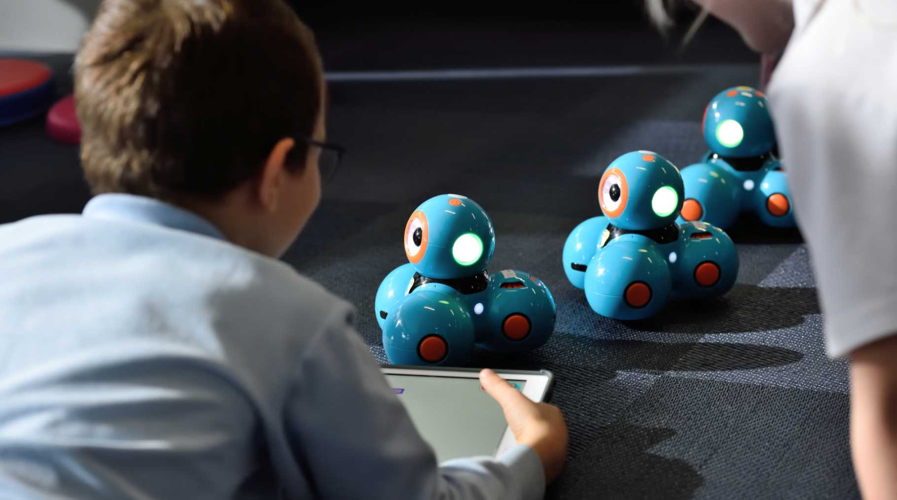
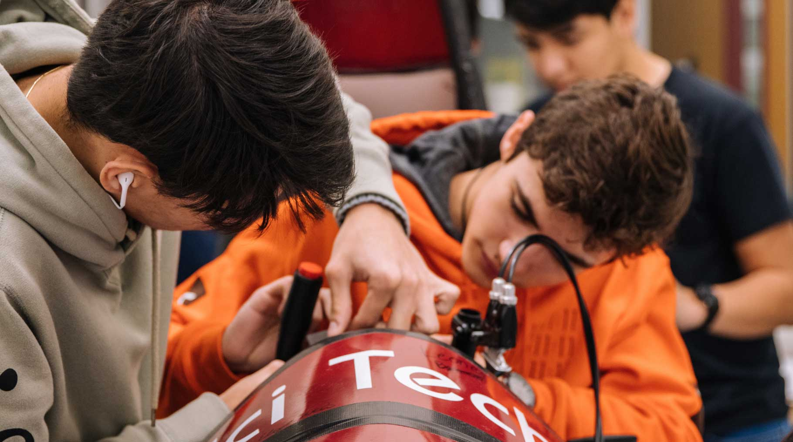
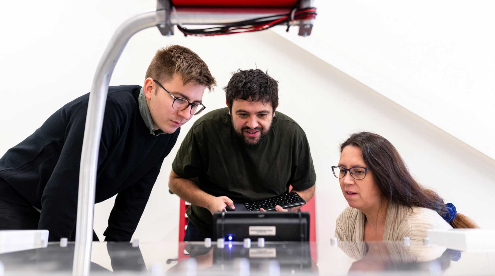

Explore
We believe that learning is not confined to a textbook.
For kids
Want to learn more about science? Come on down to our museum, there’s plenty to see and do.
You can learn about Newtonian physics from our bumper swing, or why not travel back in time and meet our resident Woolly Mammoth? Just make sure you come ready to learn and explore.
During the school holidays we run special holiday clubs where you can join other children your age to go on a journey of discovery. Send us a message to find out more.
Question? Send us a message.The young star club
Join the Young Stars club! We meets once a week on Saturday between 10:00 and 13:00. Here you'll get to explore and experiment with our team of experts. See you there!
For teachers
As a community-driven museum, we want to work with schools to create places of learning and exploring. Our team are on hand to give your students guided tours of the museum, teach them in our learning laboratory, and provide great video presentations that will excite and inspire them.
Please get in touch with us to find out more about our facilities and to arrange a time to bring your students through for a visit.
Question? Send us a message.Researchers
Are you looking to get involved with our team of researchers and academics? Our museum offers various ways for you to use our resources and contribute towards them.
We have online records, laboratory space, and a working relationship with a number of universities around the country. Send us a message to learn more.
Question? Send us a message.